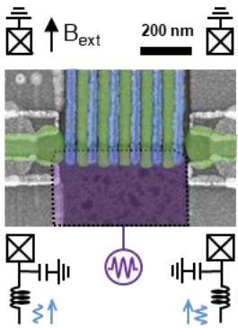
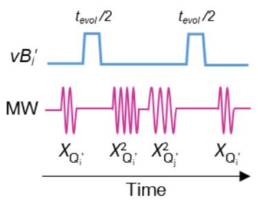

物理图像与门家族
把两个自旋 各编码在相邻量子点中、以隧穿耦合 与充电能 之比构成的交换相互作用 接到一起，开/关 即可让两比特联合态在直积基 之间累积相位或交换振幅。在硅基自旋比特体系中，所有常用两比特门——CNOT、CZ、、SWAP、iSWAP、——都可以只靠这一可调标量 和相应的单比特虚拟 旋转实现。
与塞曼能差 的比值决定本征态结构与可构造的门。按 §1.3.4 的分类：
- ：系统本征态退化为单态–三重态基 ，调控 直接实现 与 SWAP 类门；
- ：本征态近似为自旋直积态，反平行态 、 的能级整体下移 ，以此可构造 CPhase/CZ 与 CROT/CNOT 门；
- 在两者之间（）：本征态与直积态显著偏离，单比特门伴随额外的非共振相位累积，必须额外补偿。
2025 §1.3.5也指出，硅基体系下的 通过控制交换耦合的开启时间 实现， 则给出完整 SWAP 门； 再配合单比特基带门即可在理论上构造 CNOT。该论文同时给出 iSWAP 振荡（[Dijkema et al., 2021]，cavity-mediated iSWAP）、（量子模拟中的双比特门）等扩展。
模型哈密顿量
两电子自旋系统在外磁场沿 方向的近似下可由各向同性海森堡哈密顿量描述：
其中 由栅压可调，， 是第 个点的局域磁场（含外磁场与微磁体贡献）。在直积基 下， 写为（ 式 (1.18)； 式 (5.2)）
其中 、。本征值为
当 时，本征态退化为直积态、、，反平行态能级下移 ；当 时，反平行子空间折叠成单态–三重态基。
更微观的层面上， 来源于电荷态 与 之间的虚隧穿。Hubbard 极限下， 式 (1.19)–(1.20)给出
其中 为点间隧穿耦合、 为量子点平均充电能、 为左右电化学势失谐。把对称操作点 与两侧隧穿耦合相等代入， 式 (3.12)得到
对称操作点处 取得极小值且对 呈一阶不敏感——这是电荷噪声免疫与高保真 CZ 门工程的关键。
/SWAP 族： 工作区
当 主导系统能量时，本征态切换到单态–三重态基。控制 使系统演化 即在单态–三重态子空间内旋转：
把 限制在直积基 上即得
给出完整 SWAP
与两个单比特 旋转组合即可构造 CNOT（Loss & DiVincenzo, 1998, Phys. Rev. A 57, 120）；类似地， 与 单比特旋转组合给 iSWAP 的对应构造（ §1.3.4； 2025）。 2025 进一步把 SOT 辅助的单比特门与交换型 门组合，作为长程 SOT–微波–交换三层混合控制方案的核心两比特单元。
CPHASE/CZ 族： 工作区
当 远小于塞曼能差时，本征态退化为直积态， 不再驱动自旋翻转，而是让反平行态积累相位。 式 (3.10)给出
通过令 再配合两个 单比特虚拟旋转， 式 (3.11)得到 CZ 门
CZ 门的实现条件只有两点：(1) 精确控制 与演化时间 使累积相位恰为 ；(2) 校准两个单比特 旋转的相位。 在自然 Si/SiGe 一维四量子点中以 、、演化时间 完成 CZ 门，随机基准测得保真度 。要绕开两比特 Clifford 编译开销（平均 8.25 个单比特门 + 1.5 个 CPhase）拿到更紧的 CPhase 保真度，可用随机化基准测试的特征 RB（CRB）变体：以单比特 Clifford 对为参考序列、两比特 Pauli 为特征群交错 CPhase，在同类 Si/SiGe 双点器件上提取出 的两比特空间 CPhase 保真度。
对称工作点与电荷噪声抑制
在对称工作点 附近， 对失谐一阶不敏感，电荷噪声的线性贡献被自动抵消。 §3.4.2以 Hahn echo 型交换振荡（频率 ）精确标定 与对称点位置，并把势垒栅 B2 的正脉冲与能级栅 B1 的等大反向脉冲叠加以增大波函数重叠，可把 从几百 推到 。代价是当脉冲幅度过大时，操作点可能漂出 电荷区，导致 拟合的弥散度增大；为此实验中需要求 与失谐的依赖 ，并把对称点位置用作长期反馈的参考。
DCZ：动力学解耦抑制低频电荷涨落
把 CPhase 演化时间 在中间用目标比特上的 脉冲分成长度相等的两段，即得解耦形式 CZ（DCZ）：
脉冲反转低频电荷涨落在两段演化中累积的相位，等效在演化时间内插入了 动力学解耦。 §3.4.5以此制备四个 Bell 态、移除读出误差后平均保真度 、纠缠度 ； §5.5则在 Si-MOS 双量子点中以非绝热 DCZ 方案测得 CZ/2 门保真度 、Bell 态保真度 ，并强调 bias-tee 内 RC 滤波引入的高频波形畸变必须事先校准。
CROT/CNOT 族： 常开 + 共振条件驱动
当 始终保持有限而非门脉冲式开关时，系统本征态略偏离直积态。每个比特在不同控制比特态下有四个条件拉莫尔频率（ §5.3）：
在 上驱动目标比特，则只有当控制比特为 时目标比特才会翻转——这就是受控旋转（CROT）。 在 Si-MOS 双量子点中以 、 实现 常开下的 CROT，Rabi 振荡频率 、 脉冲 。
把海森堡哈密顿量转到本征基，并施加沿 方向幅度 、相位 的微波驱动，旋转坐标系下的有效哈密顿量在 、 两个子空间内分块对角化（ 式 (5.11)–(5.12)）：
演化算符可因式分解为三项
其中 、、。要实现真正的 CNOT 必须同时满足三个条件（ 式 (5.12) 后文字）：
- 微波相位 ；
- 子空间旋转 ；
- 子空间旋转 。
由于两个子空间的旋转速率不同，要让控制比特相位回到原位的同时让目标比特完成 翻转，需要在 子空间最优时间 之外再补一段 ，总时长 ，比单独满足 子空间长 （ §5.4.3）。
虚拟相位补偿
与 之间存在 相位差，对控制比特施加虚拟 即可在两个门之间切换。剩下 子空间的累积相位来自 常开下微波对相邻频率的非共振驱动，需要按门逐个补偿。 §5.4.3给出校准序列：从四种校准序列的 Ramsey 拟合得到相位偏移
由此反推非共振哈密顿相位误差
完成校准后，CROT 与 ZCROT 可以合成 CNOT 与 ZCNOT，整个两比特 Clifford 群都建立在同一时长（）的 CROT 单元之上。这种”虚拟相位门”路线在 Si/SiGe 与 Si-MOS 体系中分别由 Noiri 等与 Wister Huang 首次实现，单比特门通过两比特门的组合而非独立微波通道实现。
调控方式：失谐 vs 势垒
实现交换型两比特门通常有两条路径：
- 失谐脉冲（pulse on ）：在远离失谐零点的位置工作，门操作波形简单、只需在柱塞电极上加高速脉冲；但 对失谐的导数 较大，电荷噪声通过 直接调制比特频率，退相干严重（ §1.3.4； §5.1）。
- 势垒脉冲（pulse on ）：在对称操作点 处通过势垒栅调节 ， 对 一阶不敏感，可有效抑制电荷噪声；但需要额外的高频势垒栅控线（ §3.4.2）。
硅基体系下保真度超过 的 CZ 门几乎都采用势垒脉冲， 在自然硅中通过正反电压脉冲（B1/B2 等大反向）把 从几百 推到 ，对称操作点处 、演化 。势垒脉冲的代价是势垒栅不可避免地牵动失谐，需要 虚拟栅极技术做动态补偿。
§5.1指出 Si-MOS 样品的中间势垒栅 MB 没有高频控制线，势垒脉冲无法实施，必须采用 常开 + 共振条件驱动的 CROT 路线；这是”样品条件决定门策略”的典型案例。
第三条路线：栅极角色互换（Park 2025）
Si/SiGe 平台有一个结构性不利：SiGe 间隔层把量子点与控制电极隔开，杠杆臂偏小，势垒栅对 的调控力度先天不足——残余交换在多比特阵列里积累成多余的 相移。用微波驱动有残余耦合的比特时，时间演化算符中除了单比特操作项还多出一个正比于 的 项（ 是 Rabi 频率）；高保真单比特操作要求 ，而两比特门又要求 能在短时标内动态开关——两头都压在”可调性”上。
Park 等人给出的解法不改硬件、只换电压配置：在等宽交叠纳米栅器件上把靠近（远离）自旋比特的栅改作势垒（柱塞）栅——所谓 interchanged tuning。同一器件上原位切换角色后仍保持多比特控制，而交换耦合的可调性（对势垒脉冲幅度的指数斜率，单位 dec/V）全面提升：
| 最近邻对比 | 常规配置 | 角色互换配置 |
|---|---|---|
| 比特对 1 | 7.25 dec/V | 16.6 dec/V |
| 比特对 2 | 3.87 dec/V | 11.4 dec/V |
| 比特对 3 | 4.32 dec/V | 15.4 dec/V |

等宽交叠纳米栅与角色互换调谐：把靠近（远离）比特的纳米栅指派为势垒（柱塞）栅，电压重配置即原位切换调谐策略、同时保持多比特控制——SiGe 间隔层导致的杠杆臂劣势由此被绕开。图源：Park et al. (2025), Fig. 1。
约 16 dec/V 的可调性此前只在界面更近、杠杆臂更大的 Si-MOS 中实现过；角色互换让 Si/SiGe（比特远离电噪声界面的优势得以保留）也能达到同量级。实测 随势垒脉冲幅度先指数增长、在大幅值处偏离单一指数——对应势垒被压低后两点并合为单个大量子点、隧穿耦合趋于饱和的渐近行为；高可调性本身使全耦合区间的精确标定成为可能。

交换耦合可调性的对比：常规与角色互换配置下 J 随势垒脉冲幅度的依赖（衰减正弦振荡提取 J/2，聚焦实验常用的几 MHz 区间做指数拟合）——角色互换使所有最近邻对的可调性提升数倍至一个量级，并呈现双点并合导致的非单一指数行为。图源：Park et al. (2025), Fig. 4。
这一策略还有测量学红利：量子点可以在任意栅下形成，把”探针点”挪到不同位置即可逐点测绘微磁体梯度场、谷劈裂的空间分布与杂质噪声的空间特征。
参数与量级
| 量 | 典型值 | 实验/来源 |
|---|---|---|
| 交换能 （GaAs，交换振荡） | 几十 至 量级 | |
| 交换能 （Si/SiGe，CZ 工作点） | （演化 ） | |
| 交换能 （Si-MOS， 常开） | （） | |
| 交换能 （Si-MOS， 关闭残余） | ||
| 调节范围（势垒脉冲） | 几百 到 | |
| （Si/SiGe 一维四点） | ||
| （Si-MOS 双点） | ||
| （ 常开工作区） | ||
| CZ 演化时间（Si/SiGe，势垒脉冲） | ||
| DCZ CZ/2 演化时间（Si-MOS） | 保真度对应单段 | |
| CROT 拉比频率（Si-MOS， 常开） | （ 脉冲 ） | |
| CNOT 总时长（ 常开，Si-MOS） | ||
| 时长（Hubbard 极限） | ； | |
| CZ 门 RB 保真度（自然 Si/SiGe） | ||
| CPhase 门 CRB 保真度（自然 Si/SiGe 双点） | （两比特空间，交错 CRB 提取） | |
| 交换可调性（常规配置，Si/SiGe 等宽栅） | 7.25 / 3.87 / 4.32 dec/V（三个最近邻对） | Park 2025 |
| 交换可调性（角色互换配置） | 16.6 / 11.4 / 15.4 dec/V——Si/SiGe 首次达 Si-MOS 量级 | Park 2025 |
| 残余 ZZ 约束 | 单比特保真度要求 （附加 项） | Park 2025 |
| DCZ Bell 态保真度（自然 Si/SiGe） | 平均 （移除读出误差） | |
| DCZ Bell 态保真度（Si-MOS） | ||
| 单比特门保真度（自然 Si/SiGe） | 门 （） | |
| 子空间相位补偿占比 | ||
| 微磁体梯度（典型 EDSR） | 达 量级 |
实验特征与测量
交换振荡。把两个电子初始化到 ，沿失谐轴施加方波脉冲把系统暂时拉入 区附近，再返回 测量 的自旋上态概率。振荡频率恰好为 （在控制比特 子空间内），这是 最直接的表征方式。 §2.2.3在 GaAs 双量子点 – 区域附近观测到交换振荡（图 2.9），并将其作为 – 比特的标准读出与 旋转工具。
Hahn echo 标定。控制比特 子空间内的交换振荡额外积累两组比特的频移（包括量子点位置移动导致的微磁体梯度漂移），采用 Hahn echo 波形 –––– 即可消除这一频移，使振荡频率严格等于 。 §3.4.2以此把 的标定精度推到 量级。
四个条件频率的能谱测量。 常开方案的核心是逐一测量 四个条件频率。固定控制比特初态，对目标比特扫描拉莫尔频率得到两条共振线（取决于控制比特态）；交换两条线的角色重复一次即可画出四个频率，线间距直接给出 与 （ §5.3）。
CROT 与 ZCROT 校准。CROT 使目标比特 翻转、控制比特绕 转 ，因此与 ZCROT 之间存在 相位差，对控制比特施加虚拟 即可切换。这是 常开方案能合成全部两比特 Clifford 群的关键。实验中需要通过调节 AWG 幅度（而非微波源功率）使 与 同步拉比，并把另外两个 ZCROT 的幅度按比例校准。校准比例不是常量，工作点漂移或电压整体偏移时需要重新标定（ §5.4.2）。
对称工作点的精标。 在 处对失谐一阶不敏感。 §3.4.2以 Hahn echo + 傅里叶变换测出振荡频率极小值点即对称操作点的位置；实际操作中由于正反电压脉冲会引起两侧电化学势的非对称偏移，对称点常常偏离失谐零点，需要虚拟栅极技术做长期反馈。
量子态层析与随机基准。CZ 门保真度通常用两比特随机基准（两比特 RB）测出：随机选取两比特 Clifford 门（每个 Clifford 门由 CZ 与单比特 、、 旋转分解）作为序列、最后用一个逆门把比特拉回初态，测量 的存活概率随序列长度 的衰减。 §3.4.4用此方法测得 。Bell 态保真度则用量子态层析（QST）测出， §3.4.5制备四个 Bell 态、移除读出误差后平均保真度 、纠缠度 。
与比特编码的关系
- 单自旋比特：两比特系统由海森堡 描述， 出现在控制比特与目标比特之间。CPhase、CROT、共振 CNOT 都基于此 （ §1.3.4； §5.4）。
- 单态–三重态比特： 直接给出 轴旋转频率， 轴来自两点磁场梯度（自然核场或 微磁体）。 第 2 章把 及其大失谐渐近 作为 – 编码的源头公式。
- 共振交换量子比特： 与 同时打开，比特频率 （详见词条）；交换型两比特门的 /SWAP 路线在 RX 三点中可直接构造三比特受控相位与受控 SWAP。
- 杂化量子比特：3–5 电子、电子–空穴混合，把单占据与双占据电荷态空间扩大，交换项被推广为更复杂的矩阵，但仍以 的微扰结构为骨架。
- 电荷量子比特：电荷比特依赖点间隧穿产生的失谐依赖 实现条件相位，门时间短但退相干快；自旋比特把同一 映射到自旋态能量差上，门时间较长但相干性好得多。
读出也常借助交换相互作用：LZSM 干涉、自旋漏斗与单发读出均通过调制 让系统在不同自旋态下走出不同轨迹，从而把自旋信息转换为电荷信号。
噪声与相干
交换门的保真度受三组噪声支配：
- 电荷噪声（）：直接以 为比例调制比特频率。势垒脉冲在对称工作点利用一阶不敏感抑制低频部分；DCZ/解耦序列进一步在时间域内平均。Si/SiGe 体系中，电荷噪声通过微磁体的杂散梯度场与自旋耦合，是 被压在数微秒的主要原因（ §3.1）。
- 核自旋噪声：GaAs 中约 个核自旋的奥弗豪泽场造成 ；改用 同位素纯化样品可把 – 比特的 延长到约 ，并经动力学解耦把 推到 （ p. 31 ）。
- 隧穿耦合涨落：势垒栅的电压漂移改变 ，进而按 调制交换能。在大失谐工作点上，电荷噪声通过 的二阶依赖（）仍会留下残余退相干；通过反馈控制势垒栅电压把 锁定到目标值可进一步压低低频漂移。
速度与相干之间的折中是所有交换门工程的核心：增大 加快门操作同时必然加大 ，因此提升保真度的根本途径是降低材料/器件层面的噪声（异质结界面、微磁体优化、栅氧层厚度），而不是简单地”开得更大”。
与其他概念的关系
- 与交换相互作用： 是交换型两比特门的耦合源——CPHASE/CZ 把 用作条件相位源，CROT 把 用作条件频移源，/SWAP 直接以 为演化生成元；Hubbard 极限下 是双比特门速率的标尺。
- 与CNOT 门：CNOT 是交换型两比特门的通用目标（CPHASE + 两路 、CROT + 虚拟相位补偿、 + 两路 ）；三族门策略都把 CNOT 视为两比特 Clifford 群的生成元。
- 与Toffoli 门：Toffoli 是 CNOT 的三比特推广，可由 CNOT + 单比特门串联构造，也可在三比特条件频移的 常开方案中直接静态演示。
- 与动力学解耦：用于 CPhase 演化中抑制低频噪声，DCZ/Hahn echo 是其直接产物（ §3.4.5； §5.5）。
- 与电荷噪声与Si-MOS/GaAs/AlGaAs/Silicon–Germanium：前者决定门时长上限，后者决定 、 调节能力与典型工作点。
- 与虚拟栅极：对称工作点的精确标定与动态补偿离不开虚拟栅极，它是把”用势垒调 、不污染失谐”工程化的核心工具。
- 与JC 模型与共振交换比特：常开 的 RX 比特天然带电偶极矩，与微波谐振腔的耦合强度 由 失谐依赖调制，JC 阶梯与色散读出可原样套用。
- 与几何量子门：当旋转误差（功率失配、过冲、上升沿）成为主要错误源时，可借助几何相位或分段复合脉冲把残留误差压到二阶。
参考文献
- 交换门的原始方案与相干交换实验：Loss & DiVincenzo, PRA 57, 120 (1998)、Petta et al., PRB 72, 161301(R) (2005)。
- 交换耦合的现代门实现：Watson et al., Nature 555, 633 (2018)、Xue et al., Nature 601, 343 (2022)。
- Park, J., Jang, H., Sohn, H., Song, Y., Degli Esposti, D., Scappucci, G., Kim, D. Highly Tunable Two-Qubit Interactions in Si/SiGe Quantum Dots by Interchanging the Roles of Qubit-Defining Gates. Nano Letters（2025）. DOI: 10.1021/acs.nanolett.6c00044；arXiv:2512.20142（QAtlas 缓存：2512.20142）。
完整文献库（含各篇站内全文页）见 参考文献库。